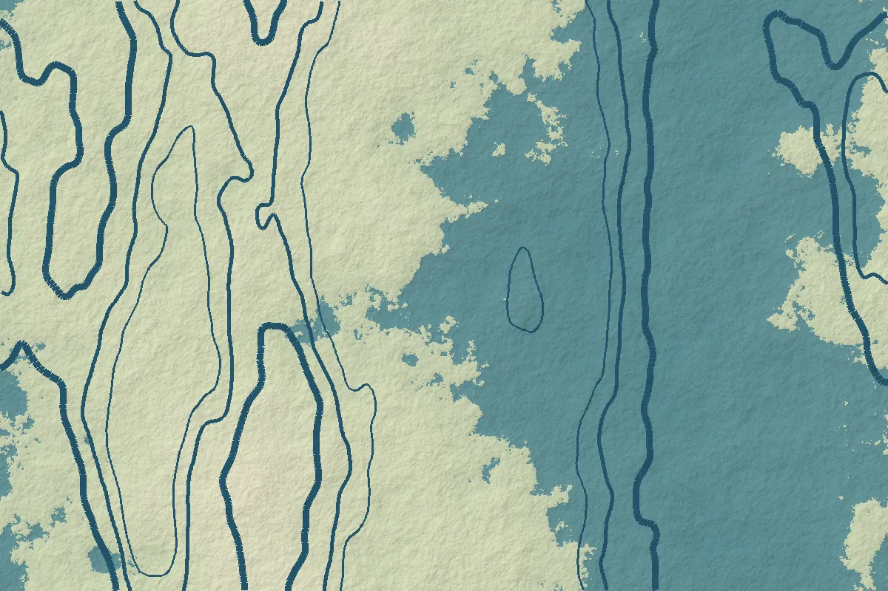
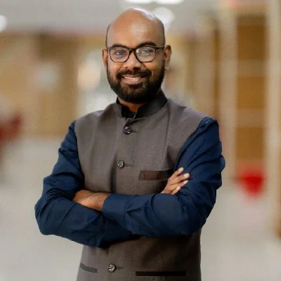
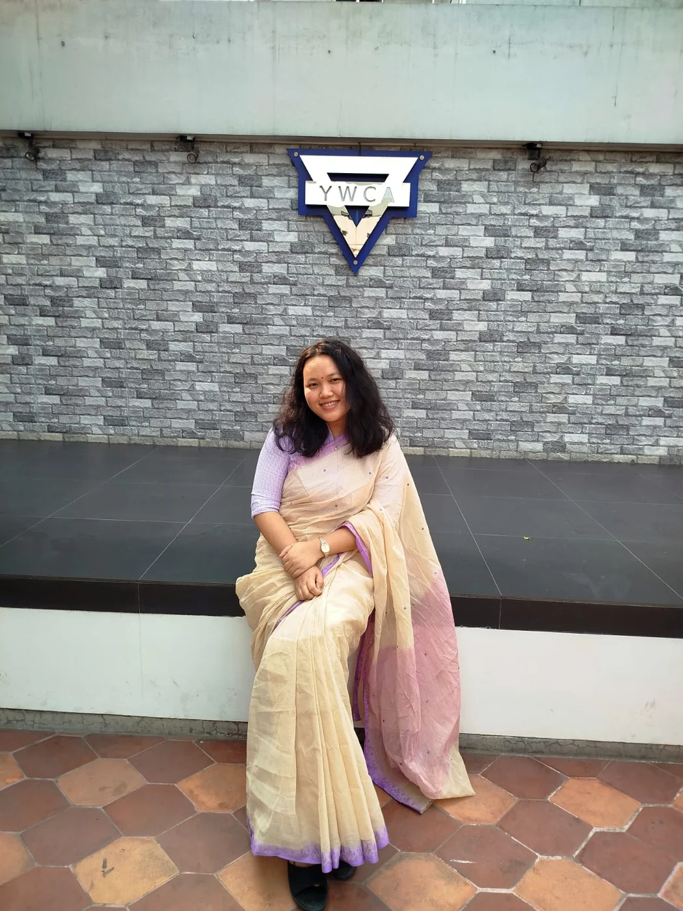
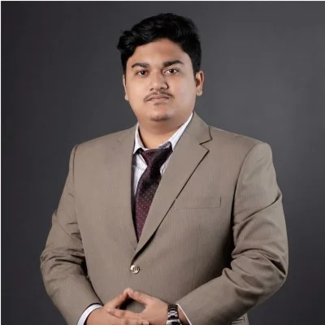
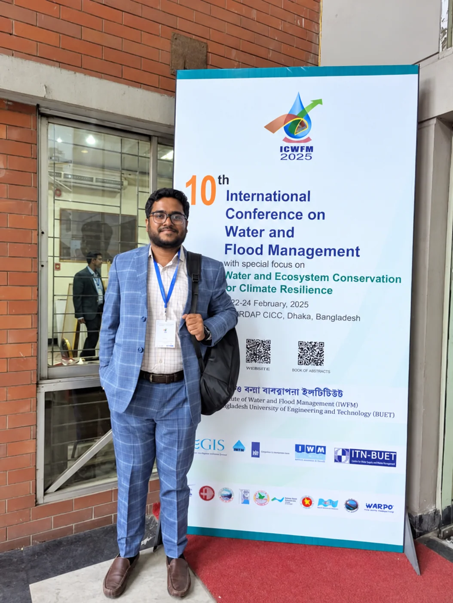

About SPEDAR Consultants
Built around evidence. Driven by purpose.
We connect research, spatial intelligence, planning and digital innovation to help organisations respond to complex development and environmental challenges with clarity.
- Founded
- 4 October 2025
- Our team
- Multidisciplinary professionals across specialised practice areas
- Our base
- Bangladesh
- Our focus
- Research, planning & consultancy

Informing decisions.
Designing what comes next.
Who we are
A connected practice for complex challenges.
Good consultancy starts by understanding the problem—not by choosing the tool before asking the question.
Founded on 4 October 2025, SPEDAR Consultants brings together urban and regional planners, environmental and social researchers, geospatial analysts, engineers and digital specialists. We work across disciplines because the questions facing communities, institutions and development projects rarely fit within a single field.
Our work connects field evidence with geospatial data, technical assessment and practical planning. Depending on the assignment, that may mean understanding land-use change, assessing environmental and social risks, preparing feasibility inputs, analysing urban and regional systems, or developing digital tools that make complex information easier to act upon.
We undertake project-based technical assignments, research collaboration and advisory support. Our multidisciplinary approach allows teams to be assembled around the demands of each brief, with clear responsibilities, documented methods and outputs designed for the people who will use them.
Our purpose
Making evidence meaningful for a more sustainable future.
Our mission
To deliver dependable, research-led consultancy that combines multidisciplinary knowledge, sound analysis and fit-for-purpose technology to support practical, inclusive and sustainable decisions.
Our vision
To grow as a trusted consultancy recognised for the quality of its evidence, integrity of its advice and contribution to resilient communities, responsible development and environmental stewardship.
Our capabilities
Expertise that works together.
From field surveys and impact assessment to spatial planning and software, our practices connect research to implementation-oriented advice.
GIS & Remote Sensing
Spatial data, mapping, satellite analysis and geospatial decision support.
Explore expertise ↗Environmental & Climate Advisory
Environmental and social studies, climate resilience and resource assessments.
Explore expertise ↗Urban & Regional Planning
Land-use studies, settlement analysis and spatial development planning.
Explore expertise ↗Research, Surveys & Assessment
Fieldwork, socioeconomic studies, feasibility inputs and technical reporting.
Explore expertise ↗Data & Digital Solutions
Applied analytics, dashboards, interactive maps and software solutions.
Explore expertise ↗Sustainability & Development
Policy support, sustainability studies and development programme advisory.
Explore expertise ↗How we work
From the initial question to a usable outcome.
We tailor the scope, methods and team to the assignment. The aim is not simply to produce a report; it is to give decision-makers a clearer understanding of their options.
Explore our delivery approachListen & define
Understand the purpose, stakeholders, decision context, available resources and key risks.
Design the methodology
Choose an appropriate mix of desk research, field data, geospatial analysis and specialist assessment.
Investigate & analyse
Evaluate evidence, document assumptions, review data quality and examine relevant alternatives.
Develop recommendations
Present feasible options with attention to technical, economic, social and environmental considerations.
Communicate & support
Provide clear reports, maps, datasets and visual outputs that support discussion and next steps.
Quality commitments
Professional standards begin with how we work.
These are our practice commitments—not claims of external certification. They shape how we plan, review and communicate assignments.
Technical rigour
Evidence-led methods, careful documentation and appropriate review of assumptions and outputs.
Integrity & accountability
Honest communication about scope, uncertainty, limitations and professional responsibilities.
Collaboration & inclusion
Respect for client needs, community perspectives and specialist knowledge across disciplines.
Practical value
Timely, accessible deliverables that help people understand findings and take informed action.
Our people
Different disciplines. Shared responsibility.
SPEDAR is shaped by professionals whose strengths span research, planning, environment, GIS, software, design and project support. We collaborate across specialised practice areas to respond to each assignment with the expertise it requires.
Meet our multidisciplinary team



Leadership
Md. Tahatul Azid
Chief Executive Officer & Managing Director
Leading a multidisciplinary approach to research, planning and practical consultancy.
Tahatul oversees SPEDAR's strategy, client engagement, proposals and quality review. His work connects urban and regional planning with GIS, environmental research and project coordination, including spatial analysis, local hazard-preparedness planning, field programmes and applied research.
Education and selected research
Bachelor of Urban and Regional Planning (BURP), Rajshahi University of Engineering & Technology (RUET), 2024. Enrolled in Environmental Science and Management at Bangladesh University of Professionals (from 2026). His research includes a Springer Geography book chapter on geospatial flood and drought vulnerability in Rajshahi District and conference work on environmental and spatial issues.
Work with SPEDAR
Start with a challenge. Move forward with evidence.
Tell us about the questions your organisation is working to answer.